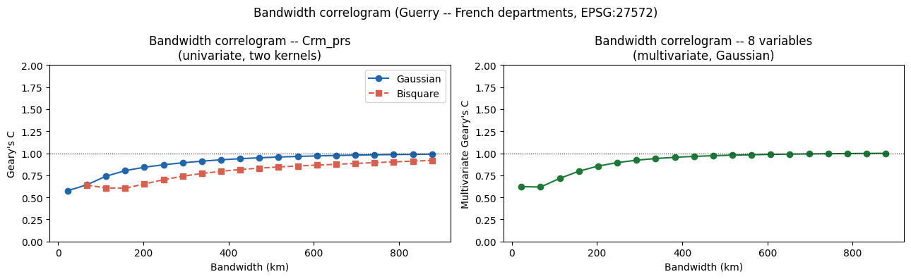
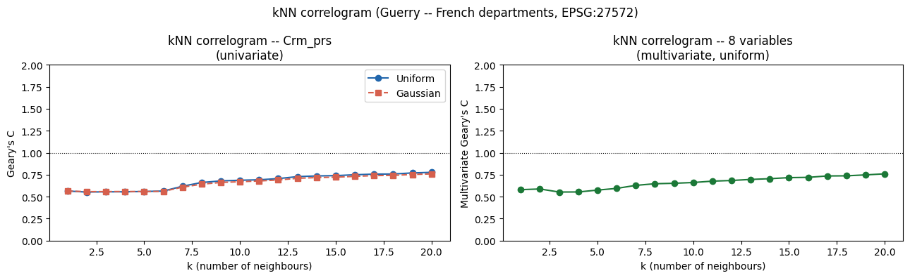
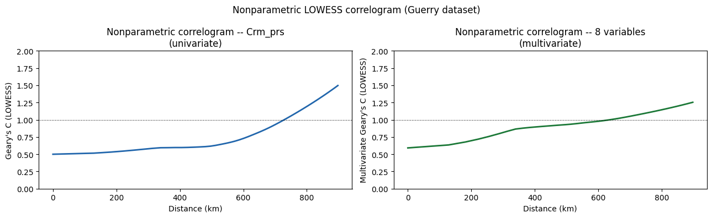
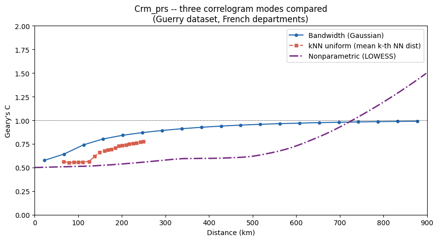

gearygram — spatial autocorrelation as a function of distance¶
gearygram computes Geary’s C correlogram: how spatial autocorrelation (or multivariate co-variation) changes with distance. It supports three modes:
Mode |
When to use |
|---|---|
Bandwidth (default) |
Kernel-weighted Geary’s C at n_bins increasing bandwidths |
kNN ( |
Cumulative k-NN Geary’s C for k = 1 … max_k |
Nonparametric ( |
LOWESS smooth of per-pair contributions vs distance^2 |
For multivariate data (p > 1) the statistic is the Anselin (2019) multivariate Geary’s C: the mean of all p per-variable values. This is likely the most useful situation for the gearygram.
Values < 1 indicate positive spatial autocorrelation; values > 1 indicate negative autocorrelation; 1 = no autocorrelation.
import numpy
import geopandas
import geodatasets
import matplotlib.pyplot as plt
from geovalidate.metrics._gearygram import gearygram
gdf = geopandas.read_file(geodatasets.get_path('geoda guerry')).to_crs('EPSG:27572')
VARS_MULTI = ['Crm_prs', 'Crm_prp', 'Litercy', 'Donatns', 'Infants', 'Suicids', 'Wealth', 'Commerc']
MAX_DIST = 900_000 # metres
print(f'n = {len(gdf)} French departments')
print(f'Variables: {VARS_MULTI}')
gdf[VARS_MULTI].describe().round(1)
n = 85 French departments
Variables: ['Crm_prs', 'Crm_prp', 'Litercy', 'Donatns', 'Infants', 'Suicids', 'Wealth', 'Commerc']
| Crm_prs | Crm_prp | Litercy | Donatns | Infants | Suicids | Wealth | Commerc | |
|---|---|---|---|---|---|---|---|---|
| count | 85.0 | 85.0 | 85.0 | 85.0 | 85.0 | 85.0 | 85.0 | 85.0 |
| mean | 19960.9 | 7881.3 | 39.1 | 6723.3 | 18982.9 | 36516.8 | 43.6 | 42.3 |
| std | 7299.2 | 3048.6 | 17.4 | 4863.2 | 8850.6 | 31498.3 | 25.1 | 24.8 |
| min | 5883.0 | 1368.0 | 12.0 | 1246.0 | 2660.0 | 3460.0 | 1.0 | 1.0 |
| 25% | 14790.0 | 5990.0 | 25.0 | 3446.0 | 14281.0 | 15400.0 | 22.0 | 21.0 |
| 50% | 18785.0 | 7624.0 | 38.0 | 4964.0 | 17044.0 | 26198.0 | 44.0 | 42.0 |
| 75% | 26221.0 | 9190.0 | 52.0 | 9242.0 | 21981.0 | 45180.0 | 65.0 | 63.0 |
| max | 37014.0 | 20235.0 | 74.0 | 27830.0 | 62486.0 | 163241.0 | 86.0 | 86.0 |
Bandwidth mode¶
Each call evaluates kernel-weighted Geary’s C at a series of increasing bandwidth values from 0 to max_distance. At bandwidth h, pair (i, j) at distance d contributes weight K(d/h). Two kernels are compared:
Gaussian (non-compact): all pairs contribute at every bandwidth
Bisquare (compact): only pairs within h contribute; uses a sparse distance matrix
res_gauss = gearygram(
gdf[['Crm_prs']], gdf,
max_distance=MAX_DIST, kernel='gaussian', n_bins=20,
)
res_bisq = gearygram(
gdf[['Crm_prs']], gdf,
max_distance=MAX_DIST, kernel='bisquare', n_bins=20,
)
res_multi = gearygram(
gdf[VARS_MULTI], gdf,
max_distance=MAX_DIST, kernel='gaussian', n_bins=20,
)
fig, axes = plt.subplots(1, 2, figsize=(13, 4), sharey=False)
ax = axes[0]
ax.plot(res_gauss.bin_centers / 1e3, res_gauss.C, 'o-', label='Gaussian', color='#2166ac')
ax.plot(res_bisq.bin_centers / 1e3, res_bisq.C, 's--', label='Bisquare', color='#d6604d')
ax.axhline(1, color='k', lw=0.8, ls=':')
ax.set_xlabel('Bandwidth (km)')
ax.set_ylabel("Geary's C")
ax.set_title('Bandwidth correlogram -- Crm_prs\n(univariate, two kernels)')
ax.legend()
ax.set_ylim(0, 2)
ax = axes[1]
ax.plot(res_multi.bin_centers / 1e3, res_multi.C, 'o-', color='#1b7837')
ax.axhline(1, color='k', lw=0.8, ls=':')
ax.set_xlabel('Bandwidth (km)')
ax.set_ylabel("Multivariate Geary's C")
ax.set_title(f'Bandwidth correlogram -- {len(VARS_MULTI)} variables\n(multivariate, Gaussian)')
ax.set_ylim(0, 2)
fig.suptitle('Bandwidth correlogram (Guerry -- French departments, EPSG:27572)')
fig.tight_layout()
plt.show()
print(f'Gaussian C range: {res_gauss.C.min():.3f} -- {res_gauss.C.max():.3f}')
print(f'Bisquare C range: {res_bisq.C.min():.3f} -- {res_bisq.C.max():.3f}')
print(f'Multivar C range: {res_multi.C.min():.3f} -- {res_multi.C.max():.3f}')

Gaussian C range: 0.576 -- 0.990
Bisquare C range: nan -- nan
Multivar C range: 0.618 -- 1.000
kNN mode (max_k)¶
gearygram(..., max_k=K) evaluates the cumulative kNN Geary’s C for $k = 1, 2, …, K$. At each $k$ every observation’s $k$-nearest neighbours are included; the adaptive bandwidth is set to each observation’s $k$-th nearest-neighbour distance so the boundary neighbour just falls inside the kernel support.
Uniform kernel (default): all k neighbours equally weighted
Gaussian kernel: closer neighbours receive higher weight
res_knn_unif = gearygram(gdf[['Crm_prs']], gdf, max_k=20,)
res_knn_gauss = gearygram(gdf[['Crm_prs']], gdf, max_k=20, kernel='gaussian')
res_knn_multi = gearygram(gdf[VARS_MULTI], gdf, max_k=20)
fig, axes = plt.subplots(1, 2, figsize=(13, 4), sharey=False)
ax = axes[0]
ax.plot(res_knn_unif.bin_centers, res_knn_unif.C, 'o-', label='Uniform', color='#2166ac')
ax.plot(res_knn_gauss.bin_centers, res_knn_gauss.C, 's--', label='Gaussian', color='#d6604d')
ax.axhline(1, color='k', lw=0.8, ls=':')
ax.set_xlabel('k (number of neighbours)')
ax.set_ylabel("Geary's C")
ax.set_title('kNN correlogram -- Crm_prs\n(univariate)')
ax.legend()
ax.set_ylim(0, 2)
ax = axes[1]
ax.plot(res_knn_multi.bin_centers, res_knn_multi.C, 'o-', color='#1b7837')
ax.axhline(1, color='k', lw=0.8, ls=':')
ax.set_xlabel('k (number of neighbours)')
ax.set_ylabel("Multivariate Geary's C")
ax.set_title(f'kNN correlogram -- {len(VARS_MULTI)} variables\n(multivariate, uniform)')
ax.set_ylim(0, 2)
fig.suptitle('kNN correlogram (Guerry -- French departments, EPSG:27572)')
fig.tight_layout()
plt.show()
print(f'Uniform C at k=1: {res_knn_unif.C[0]:.3f}, k=20: {res_knn_unif.C[-1]:.3f}')
print(f'Gaussian C at k=1: {res_knn_gauss.C[0]:.3f}, k=20: {res_knn_gauss.C[-1]:.3f}')

Uniform C at k=1: 0.564, k=20: 0.777
Gaussian C at k=1: 0.564, k=20: 0.759
Nonparametric LOWESS mode (nonparametric=True)¶
This mimics the nonparametric Moran correlogram (see esda.correlogram), where a LOWESS smooth is fit directly to the per-pair Geary contributions (||z_i - z_j||^2 / 2p) as a function of squared spatial distance. No kernel or bandwidth choice is needed. The result reveals the natural shape of autocorrelation decay.
res_np_univ = gearygram(
gdf[['Crm_prs']], gdf,
nonparametric=True, max_distance=MAX_DIST, n_bins=50,
)
res_np_multi = gearygram(
gdf[VARS_MULTI], gdf,
nonparametric=True, max_distance=MAX_DIST, n_bins=50,
)
fig, axes = plt.subplots(1, 2, figsize=(13, 4), sharey=False)
ax = axes[0]
ax.plot(res_np_univ.bin_centers / 1e3, res_np_univ.C, color='#2166ac', lw=2)
ax.axhline(1, color='k', lw=0.8, ls=':')
ax.set_xlabel('Distance (km)')
ax.set_ylabel("Geary's C (LOWESS)")
ax.set_title('Nonparametric correlogram -- Crm_prs\n(univariate)')
ax.set_ylim(0, 2)
ax = axes[1]
ax.plot(res_np_multi.bin_centers / 1e3, res_np_multi.C, color='#1b7837', lw=2)
ax.axhline(1, color='k', lw=0.8, ls=':')
ax.set_xlabel('Distance (km)')
ax.set_ylabel("Multivariate Geary's C (LOWESS)")
ax.set_title(f'Nonparametric correlogram -- {len(VARS_MULTI)} variables\n(multivariate)')
ax.set_ylim(0, 2)
fig.suptitle('Nonparametric LOWESS correlogram (Guerry dataset)')
fig.tight_layout()
plt.show()

Comparison: all three modes¶
The three modes are complementary:
Bandwidth: explicit scale control; Gaussian is smooth, bisquare is sparser
kNN: natural for irregular sampling, aggregates at topological scale
Nonparametric: fewer assumptions, shows fine structure
All three converge toward 1 at large distances (spatial independence beyond the autocorrelation range).
from scipy.spatial import cKDTree
coords = numpy.column_stack([gdf.geometry.centroid.x, gdf.geometry.centroid.y])
tree = cKDTree(coords)
dists_k, _ = tree.query(coords, k=21)
knn_mean_dist = numpy.array([dists_k[:, k].mean() for k in range(1, 21)])
fig, ax = plt.subplots(figsize=(9, 5))
ax.plot(res_gauss.bin_centers / 1e3, res_gauss.C,
'o-', lw=1.5, ms=4, color='#2166ac', label='Bandwidth (Gaussian)')
ax.plot(knn_mean_dist / 1e3, res_knn_unif.C,
's--', lw=1.5, ms=4, color='#d6604d', label='kNN uniform (mean k-th NN dist)')
ax.plot(res_np_univ.bin_centers / 1e3, res_np_univ.C,
lw=2, color='#762a83', ls='-.', label='Nonparametric (LOWESS)')
ax.axhline(1, color='k', lw=0.8, ls=':')
ax.set_xlabel('Distance (km)')
ax.set_ylabel("Geary's C")
ax.set_title('Crm_prs -- three correlogram modes compared\n(Guerry dataset, French departments)')
ax.legend()
ax.set_xlim(0, MAX_DIST / 1e3)
ax.set_ylim(0, 2)
fig.tight_layout()
plt.show()
